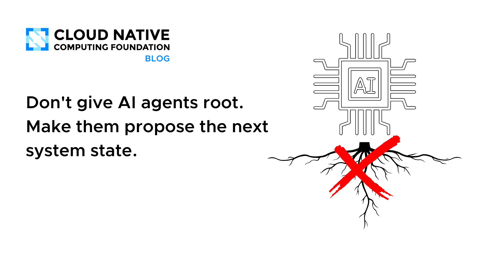
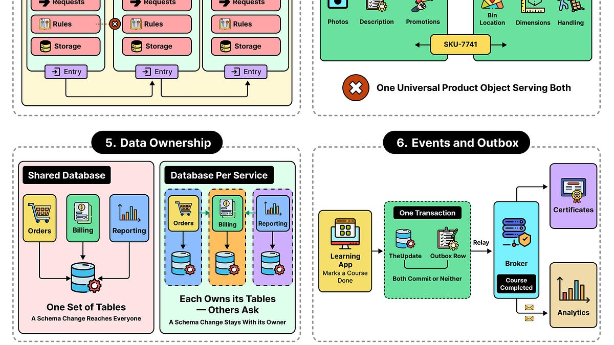
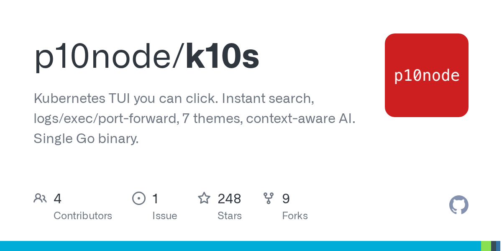
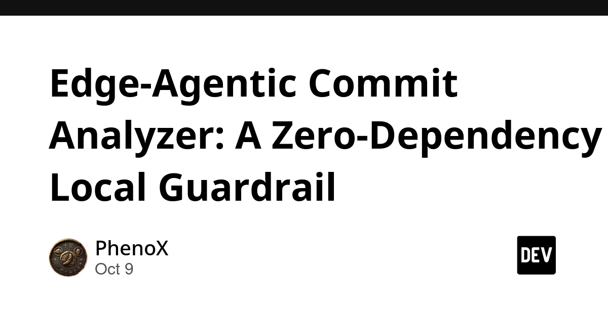
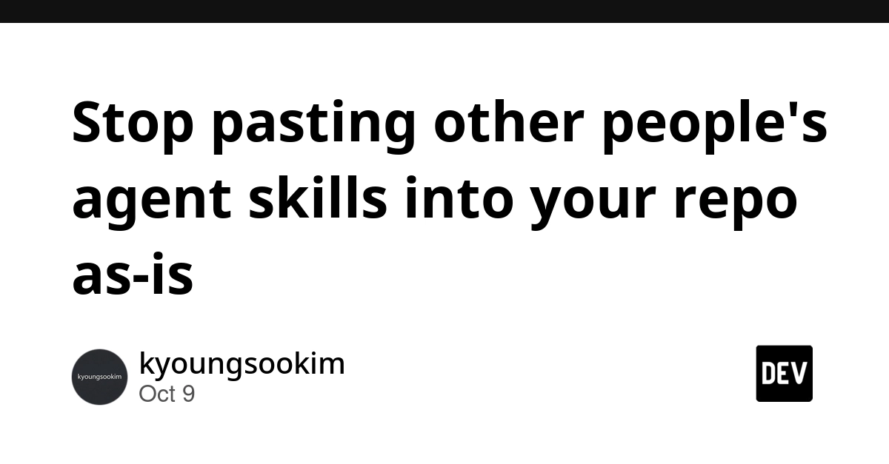
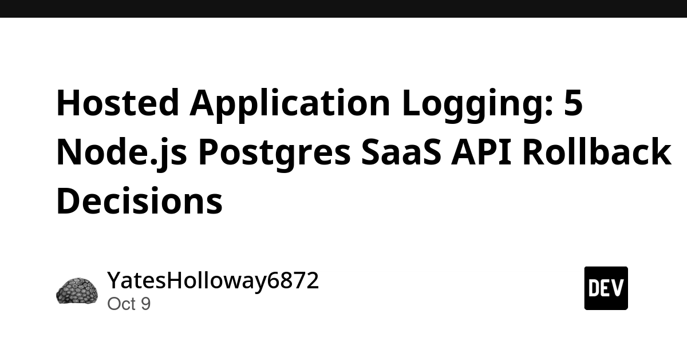
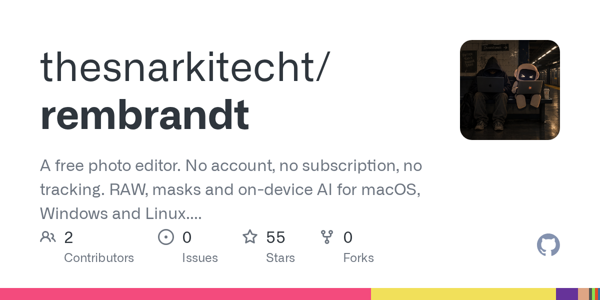
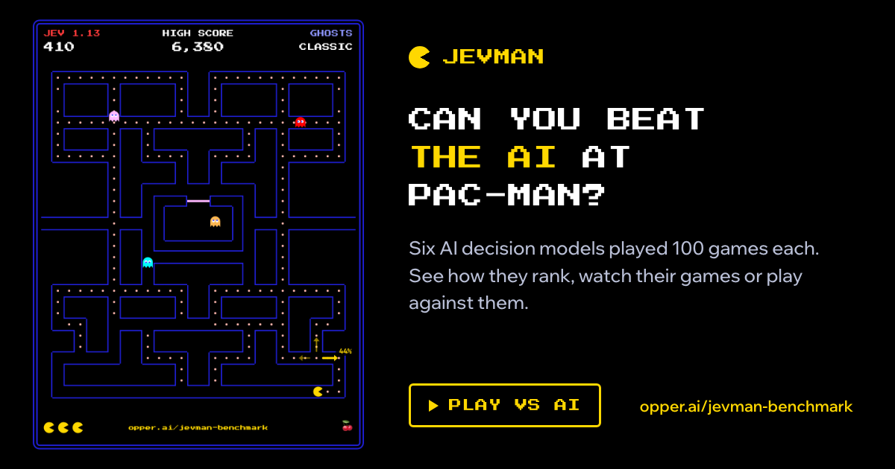

🔥 Top 3 (must read)
The Pulse: Firebase's global outage & poor response
A backend change made the Firebase iOS SDK crash, and every app using Firebase Analytics crashed for 2-6 hours. Google did not update the status page and only published a postmortem 4 days later. Why it matters: Your Flutter apps most likely ship Firebase Analytics. This is a good case study for "a vendor SDK can take down my app" and for how not to run incident communication.

Don't give AI agents root. Make them propose the next system state.
CNCF post on when an autonomous agent may safely operate a machine. The answer: let the agent propose a desired state, and let a controlled reconciler (like Kubernetes does) apply it, instead of giving the agent a shell. Why it matters: A clear mental model for letting coding agents and ops agents touch infra without handing them full access.

How Software Boundaries Are The Most Important Skill for Developers
ByteByteGo on how to decide where module and service boundaries go. Practical strategies for drawing lines that keep systems easy to change. Why it matters: Good material for design reviews and for coaching engineers on splitting a Node.js backend without creating a distributed mess.

🛠 Tools & releases
Show HN: K10s – A Clickable Kubernetes TUI (Go, Bubble Tea)
a mouse-friendly terminal UI for Kubernetes, in the spirit of k9s. HN discussion (62 points, 46 comments).

ttok 0.4
Simon Willison's CLI for counting tokens with tiktoken. New
--list-models flag, runs via uvx. Handy for checking prompt sizes in scripts.S
Edge-Agentic Commit Analyzer: A Zero-Dependency Local Guardrail
a one-shot pre-commit script that checks the intent of a change, catches placeholder code and missing tests, with no daemon or API.

🤖 AI for developers
Launching an opt-in vulnerability-finding service for open-source software
Anthropic will scan open-source projects for security bugs if maintainers opt in. See also the OSS Scanner page and the wider Anthropic Cyber Mission announcement, which merges its cyber access programs into one 3-tier offering.

Stop pasting other people's agent skills into your repo as-is
argues that shared agent skills need adapting to your repo's conventions before they are useful, and shows a tool to do that.

I think I found a planet nobody knew existed. I used Claude Code to find it
a fun example of Claude Code driving a data-analysis workflow end to end. HN discussion (117 points, 49 comments).
R
👔 Engineering & teams
Quoting Carson Gross
the htmx author on why problem-solving and controlling complexity stay valuable as a career even with AI. A good one-paragraph answer for engineers who ask "is this job going away?".
S
Hosted Application Logging: 5 Node.js Postgres SaaS API Rollback Decisions
how to pick a hosted log store for a Node.js API so you can later prove which release changed what and whether a rollback finished.

🎯 For me
The Firebase outage is the direct hit: it crashed iOS apps through the Analytics SDK, so it is worth checking how your Flutter apps would behave if a Firebase SDK crashed at startup, and whether you can gate or lazy-load it.
The CNCF "propose, don't execute" pattern is a ready-made policy for how your team lets coding agents touch CI and infra.
The boundaries article and the Node.js logging/rollback piece both fit design-review and delivery-process discussions.
💡 App ideas & indie builds
Show HN: Free open source Adobe Lightroom alternative, completely local with AI
a photo editor that runs fully on your machine with local AI features. User problem: people want Lightroom-style editing without a subscription and without uploading their photos. Inspiration: "local-first + AI" is a strong angle for any tool where users care about privacy or cost. HN (42 points, 49 comments).

Show HN: SVG Spark – 10 client-side SVG design and dev tools
a bundle of small browser-only SVG utilities (optimize, convert, preview). User problem: devs keep hunting for one-off SVG tools that often upload files to a server. Inspiration: a collection of tiny, no-backend web tools is cheap to build and ship. HN.
S
Show HN: Jevman – AI decision models play Pac-Man
a playful benchmark where LLMs control Pac-Man. User problem: comparing model decision-making in a way that is fun to watch. Inspiration: games are a nice wrapper for showing off how a model or agent behaves. HN.

Show HN: Making a flexible "neon" t-shirt with LED filaments
a maker project, not software, but a good write-up of going from idea to a finished, wearable object. HN (119 points, 21 comments).
🎓 Try this
Install ttok 0.4 with
uvx ttok and pipe a few of your Claude Code prompts or CLAUDE.md files through it. It takes a minute and tells you how much context your setup burns before any work starts.